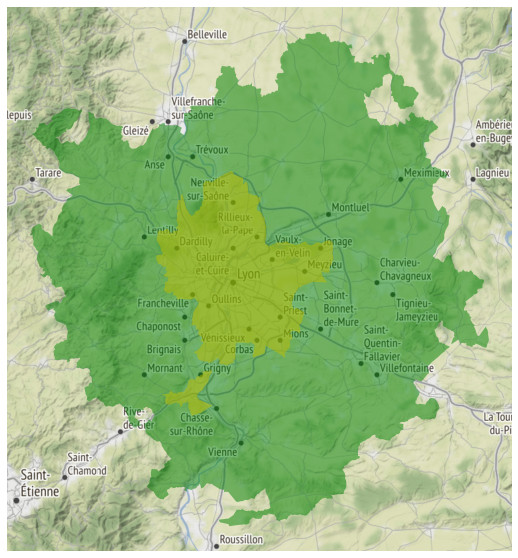

We are going to explore some geospatial data from the european Urban Atlas with the Python package GeoPandas. Here is a short description of these data from this website:
The European Urban Atlas provides reliable, inter-comparable, high-resolution land use maps for over […] 800 Functional Urban Area (FUA) and their surroundings (more than 50.000 inhabitants) for the 2012 reference year in EEA39.
Data for the city of Lyon, France, is downloaded from the Urban Atlas 2012 page and then uncompressed in a local data/ directory.
From the compressed archive, we got 3 shapefiles in the shapefile folder:
- FR003L2_LYON_CityBoundary
- FR003L2_LYON_UA2012
- FR003L2_LYON_UA2012_Boundary
This post is mainly inspired from this notebook by Joris Van den Bossche, the main developper of geopandas.
Let’s start by describing how we created the environment, and import the packages.
Environment & package installation
We installed the following packages with anaconda:
conda create -n urban_atlas python=3.7
conda activate urban_atlas
conda install -y pandas jupyterlab matplotlib
conda install -y descartes mapclassify
conda install -y geopandas colorcet
pip install contextily
Here are the main packages’ version:
| Package | Version |
|---|---|
| geopandas | 0.5.1 |
| pandas | 0.25.0 |
| matplotlib | 3.1.1 |
| numpy | 1.16.4 |
| colorcet | 1.0.0 |
| contextily | 0.99.0.dev |
After importing the packages, we are now ready to load the shapefiles.
Data loading
Shapefiles are loaded into geodataframes:
%%time
lyon_CityBoundary = gpd.read_file(FR003L2_LYON_CityBoundary_path)
lyon_UA2012 = gpd.read_file(FR003L2_LYON_UA2012_path)
lyon_UA2012_Boundary = gpd.read_file(FR003L2_LYON_UA2012_Boundary_path)
CPU times: user 5.69 s, sys: 270 ms, total: 5.96 s
Wall time: 5.91 s
The two boundary shapefiles only have one row, each one with the respective boundary geometries (city and urban area). They also have some geographic attributes about the areas. The lyon_UA2012 geodataframe is more massive:
lyon_UA2012.shape
(94614, 11)
It seems that there is no missing value:
lyon_UA2012.isna().any().any()
False
Here are the dataframe’s columns:
lyon_UA2012.columns
Index(['COUNTRY', 'CITIES', 'FUA_OR_CIT', 'CODE2012', 'ITEM2012', 'PROD_DATE',
'IDENT', 'Shape_Leng', 'Shape_Area', 'Pop2012', 'geometry'],
dtype='object')
Later we will describe these attributes. Let’s start by plotting the city and urban area boundaries, with background tiles.
Plot a map with background tiles
The contextily package is used to add the tiles (see geopandas’ documentation here). We also need to convert the geodataframe geometries to Web Mercator (EPSG 3857) at the same time, in order to match the projection of the tiles:
lyon_CityBoundary = lyon_CityBoundary.to_crs(epsg=3857)
lyon_UA2012 = lyon_UA2012.to_crs(epsg=3857)
lyon_UA2012_Boundary = lyon_UA2012_Boundary.to_crs(epsg=3857)
Now we can plot the two boundary shapefiles:
# this function is taken from http://geopandas.org/gallery/plotting_basemap_background.html
def add_basemap(ax, zoom, url='http://tile.stamen.com/terrain/tileZ/tileX/tileY.png'):
# tiles: terrain, terrain-background, terrain-labels, terrain-lines, toner,
# toner-background, toner-hybrid, toner-lines, toner-lite, watercolor
xmin, xmax, ymin, ymax = ax.axis()
basemap, extent = ctx.bounds2img(xmin, ymin, xmax, ymax, zoom=zoom, url=url)
ax.imshow(basemap, extent=extent, interpolation='bilinear')
ax.axis((xmin, xmax, ymin, ymax)) # restore original x/y limits
ax = lyon_UA2012_Boundary.plot(figsize=figsize_S, color='g', alpha=0.5);
lyon_CityBoundary.plot(ax=ax, color='y', alpha=0.5);
add_basemap(ax, zoom=10);
plt.axis('off');

We can see on this map the urban area and the metropolitan region of Lyon (the inner boundary).
Now let’s look at the attributes the larger shapefile.
Land use and land cover data
Zonal attributes
lyon_UA2012.head(2)
| COUNTRY | CITIES | FUA_OR_CIT | CODE2012 | ITEM2012 | PROD_DATE | IDENT | Shape_Leng | Shape_Area | Pop2012 | geometry | |
|---|---|---|---|---|---|---|---|---|---|---|---|
| 0 | FR | Lyon | FR003L2 | 11100 | Continuous urban fabric (S.L. : > 80%) | 2015 | 1-FR003L2 | 269.157363 | 3336.206536 | 13 | POLYGON ((557163.6322599069 5691021.665466284,... |
| 1 | FR | Lyon | FR003L2 | 11100 | Continuous urban fabric (S.L. : > 80%) | 2015 | 2-FR003L2 | 298.965906 | 1536.998514 | 7 | POLYGON ((530679.8832735929 5692765.775455, 53... |
For each geometry, we have the following attributes:
- COUNTRY: country code, always FR
- CITIES: main city, always Lyon
- FUA_OR_CIT: urban area code, always FR003L2
- CODE2012: code for the geographic type of the area covered by the geometry
- ITEM2012: label of the geographic type of the area covered by the geometry
- PROD_DATE: production date, always 2015
- IDENT: unique area identifier
- Shape_Leng: maximum length of the geometry (m)
- Shape_Area: area of the geometry (m2)
- Pop2012: population living in the area covered by the geometry
Geographic types
Here are the different geographic types found in the table:
codes = lyon_UA2012[['CODE2012', 'ITEM2012']].drop_duplicates().reset_index(drop=True)
pd.set_option('display.max_colwidth', -1)
codes
| CODE2012 | ITEM2012 | |
|---|---|---|
| 0 | 11100 | Continuous urban fabric (S.L. : > 80%) |
| 1 | 11210 | Discontinuous dense urban fabric (S.L. : 50% - 80%) |
| 2 | 11220 | Discontinuous medium density urban fabric (S.L. : 30% - 50%) |
| 3 | 11230 | Discontinuous low density urban fabric (S.L. : 10% - 30%) |
| 4 | 11240 | Discontinuous very low density urban fabric (S.L. : < 10%) |
| 5 | 11300 | Isolated structures |
| 6 | 12100 | Industrial, commercial, public, military and private units |
| 7 | 12300 | Port areas |
| 8 | 12400 | Airports |
| 9 | 13100 | Mineral extraction and dump sites |
| 10 | 13300 | Construction sites |
| 11 | 13400 | Land without current use |
| 12 | 14100 | Green urban areas |
| 13 | 14200 | Sports and leisure facilities |
| 14 | 21000 | Arable land (annual crops) |
| 15 | 22000 | Permanent crops (vineyards, fruit trees, olive groves) |
| 16 | 23000 | Pastures |
| 17 | 31000 | Forests |
| 18 | 32000 | Herbaceous vegetation associations (natural grassland, moors…) |
| 19 | 33000 | Open spaces with little or no vegetation (beaches, dunes, bare rocks, glaciers) |
| 20 | 40000 | Wetlands |
| 21 | 50000 | Water |
| 22 | 12220 | Other roads and associated land |
| 23 | 12230 | Railways and associated land |
| 24 | 12210 | Fast transit roads and associated land |
Actually we can set these two columns as categorical in the larger dataframe, instead of string:
lyon_UA2012[['CODE2012', 'ITEM2012']].dtypes
CODE2012 object
ITEM2012 object
dtype: object
lyon_UA2012[['CODE2012', 'ITEM2012']] = lyon_UA2012[['CODE2012', 'ITEM2012']].astype('category')
From Pandas’ documentation: > Categoricals are a pandas data type corresponding to categorical variables in statistics. A categorical variable takes on a limited, and usually fixed, number of possible values (categories; levels in R). Examples are gender, social class, blood type, country affiliation, observation time or rating via Likert scales.
Also we can look at the global distribution of the geographic types over all the urban area:
total_areas = pd.merge(lyon_UA2012[['CODE2012', 'Shape_Area']].groupby('CODE2012').sum().sort_values(
by='Shape_Area', ascending=False), codes, left_index=True, right_on='CODE2012', how='left').reset_index(drop=True)
ax = total_areas.plot.barh(x='ITEM2012', y='Shape_Area', logx=True, figsize=figsize_S, legend=False, title='Total area per geographic type');
ax.set_xlabel('Area (km2), log scale');
plt.gca().invert_yaxis()

Or, we can look at the spatial distribution:
glasbey = ListedColormap(cc.glasbey)
lyon_UA2012.plot(figsize=figsize_L, column='ITEM2012', cmap=glasbey, legend=True, legend_kwds={'bbox_to_anchor': (1.7, 1.0), 'title': 'Geographic type'});
plt.axis('off');

Let us just select a few of all the geographic types, in order exhibit the vegetation or water areas
types = ['Forests', 'Water', 'Arable land (annual crops)', 'Pastures', 'Permanent crops (vineyards, fruit trees, olive groves)']
ax = lyon_UA2012[lyon_UA2012.ITEM2012.isin(types)].plot(
figsize=figsize_L, column='ITEM2012',
cmap='tab10', legend=True, legend_kwds={'bbox_to_anchor': (1.7, 1.0), 'title': 'Geographic type'});
add_basemap(ax, url='http://tile.stamen.com/toner-background/tileZ/tileX/tileY.png', zoom=10);
plt.axis('off');

Now we are going to compute and plot the population density.
Population density
In order to create a choropleth map, we first compute the density in number of inhabitants per $km^2$:
lyon_UA2012['density'] = 1e6 * lyon_UA2012.Pop2012 / lyon_UA2012.Shape_Area
fire = ListedColormap(cc.fire)
ax = lyon_UA2012.plot(
column='density', figsize=figsize_L,
scheme='fisherjenkssampled', k=20, cmap=fire, legend=True,
legend_kwds={'bbox_to_anchor': (1.3, 1.0), 'title': 'Population density (pop./km2)'});
add_basemap(ax, url='http://tile.stamen.com/toner-background/tileZ/tileX/tileY.png', zoom=10);
plt.axis('off');

Conclusion
GeoPandas is a really good package built on top of another great package: Pandas. It is open-source and incredibly handy. It allows you to explore/visualize/analyze geospatial data with a lot of ease, within the PyData ecosystem.
On the downside, it may appear to be slow when dealing with larger datasets. From what I understand, this is something that is addressed by the geopandas-cython development branch?? Also, there is a Dask-Geopandas initiative, which sounds terrific!
Twitter
LinkedIn
Email